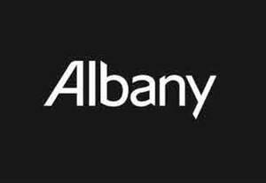
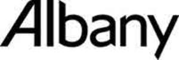

Trade Mark Journal No.2025/021 23 May 2025
UK00004197610 1 May 2025 (1,2,3,5,7,8,16,17,19,27)
Mark 1
Mark 2

Mark 3

Mark 4
- Class 1
- Adhesives for wallpapers; Adhesives for wall coverings; adhesives for floor coverings; adhesives for ceiling coverings; adhesives for wall tiles; adhesives for floor tiles; adhesives for ceiling tiles; water proofers; fillers; solvents; white spirit; sealants for tiles; chemicals for use in industry; unprocessed artificial resins; tempering and soldering preparations; adhesives for use in industry; Putties and other paste fillers.
- Class 2
- Paint; primers; turpentine; colouring matters, dye-stuffs; Varnishes, lacquers; preservatives against rust and against deterioration of wood; colorants; colourants; mordants; raw natural resins; metals in foil and powder form for painters, decorators, printers and artists; paints and lacquers for artists and decorators; dyes; dyestuffs; coatings; fireproof paints; bactericidal paints; vitrification preparations; surface coatings; base coatings for walls; dye thinners; colouring paint thinners; lacquer thinners; paint thinners; primer thinners; thinners for lacquers; thinners for paints; thinners for colours; thinners for coatings; thinners for dyestuffs; thinners for paints; thinners for varnishes; thinners for inks; turpentine [thinners for paints]; thinning preparations for paints and for coatings; mineral spirits for use as paint thinners; thinners and thickeners for coatings, dyes and inks; sealers; sealers (paints); pigments; wood stains; preservatives for metals; colouring pigments; enamels; metal paints; finishing paint; varnish; varnishes; varnishes for wood; dyes for wood; colouring materials; colouring matters; undercoating for surfaces to be painted; aluminium paints; aluminium powder for painting; anti-corrosive preparations; anti-rust greases; anti-rust oils; anti-rust preparations for preservation; anti-tarnishing preparations for metals; binding preparations for paints; bitumen varnish; bronze powder for painting; bronzing lacquers; carbonyl [wood preservative]; ceramic paints; coatings for roofing felt [paints]; coatings [paints]; cobalt oxide [colorant]; creosote for wood preservation; dyes; distempers; enamels for painting; enamels [varnishes]; fireproof paints; fixatives [varnishes]; glazes [paints, lacquers]; mordants; mordants for leather; natural resins; oils for the preservation of wood; protective preparations for metals; repositionable paint patches; siccatives [drying agents] for paints; silver emulsions [pigments]; emulsions in the nature of paints; sumac for varnishes; thickeners for paints; wood coatings [paints]; wood mordants; wood preservatives; creosote for wood preservation; undercoats [paints]; solvents for thing paints; thinners, sealers, varnishes, exterior and interior wall finishes; distempers, enamels, lacquers, wood stains and preservatives against rust and deterioration of wood; fungicidal coatings in the nature of paints; water repellent fungicidal wood stains.
- Class 3
- Cleaning preparations for use in decorating; solvent cleaners; solvents for stripping purposes; paint stripping preparations; paintbrush cleaners; abrasives including abrasive paper and cloth; sandpaper; sand cloth; glass paper; glass cloth; cleaning, polishing, scouring and abrasive preparations; cleaning oils; paint stripping preparations; rust removing agents; preparations for softening paint brushes; wipes incorporating cleaning preparations; washing preparations containing fungicidal properties; cleaning preparations and products for painting and decorating; bleaching preparations and other substances for laundry use; cleaning, polishing, scouring and abrasive preparations; polish for furniture and flooring; floor waxes; polishing waxes; abrasives except dental abrasives; rust removing preparations; scouring solutions; preparations for cleaning waste pipes; shampoos for floor coverings; stain removers; scale removing preparations for household use; detergents other than for use in manufacturing operations and for medical use; emery cloths; oil of turpentine; paint-stripping preparations; laundry preparations; polishing paper; sandpaper; degreasers other than for use in manufacturing processes; paint strippers; wax polish for wooden floors; wood treatment preparations for cleaning and polishing; cream cleaners; upholstery cleaner; toilet cleaners; window cleaners; non-medicated preparations in cream form for forming a barrier against dirt on the body; soaps; hand cleaner; sugar soap; essential oils; degreasing preparations; preparations for grinding and sharpening; preservatives for leather; sand paper; glass and emery paper; wet and dry abrasive paper; stain removing preparations including stain removing preparations for carpets, hard surfaces and laundry; degreasing detergents; disposable wipes impregnated with chemicals and compounds for household use.
- Class 5
- Fungicides; fungicidal preparations; fungicidal preparations, including fungicidal agents.
- Class 7
- Colour tinting machines; air brushes; mixers [machines]; dispenser machines; all included in Class 7 for paints and for the like liquids or emulsions; machines, machine tools, power-operated tools.
- Class 8
- Hand tools and implements, hand-operated; decorators' tools; scissors; scrapers; knives; putty knives; shave hooks; wire brushes; wallpaper seam rollers; parts and fittings for all the aforesaid goods.
- Class 16
- Artists; materials; paint brushes; brushes for decorators; office requisites (except furniture); instructional and teaching material (except apparatus); plastic materials for packaging (not included in other classes); printing blocks; books; pamphlets; paint rollers; sealing wax; stencils; wall stickers; paper or plastic garbage bags; cardboard boxes for moving; materials for modelling; hand rollers and pads incorporating holding devices, all for applying paint; maps, posters, decalcomanias; publications (printed); printed promotional material; brochures; printed forms; cards (other than encoded or magnetic) for use in connection with loyalty, bonus and incentive schemes; instruments for use in painting; paint applicators in the nature of sponges; hand held instruments for painting; pads for applying paint; paint rollers; paint roller covers; paint roller sleeves; paint roller frames; paint roller handles; paint roller trays; paint stirrers; requisites for painting [other than paint]; correcting aids for painting purposes; correcting implements for painting purposes; paint books [colour charts]; paint books [printed matter]; colour cards; maps; posters; printed gift vouchers, not encoded; gift tokens; greeting cards; colour cards and colour sheets; brushes and rollers; brushes and rollers for painters, decorators and sign writers; paint trays; paint boxes; paint and paste stirrers; paint pads; paper hanging products and accessories; lining paper; stencils, murals, paintings; printed matter; photographs; stationery; adhesives for stationery or household purposes; parts, fittings and accessories for all the aforesaid goods.
- Class 17
- Sealants; sealants for tiles, windows and doors; waterproofers including waterproofers for walls.
- Class 19
- Interior and exterior fillers including plaster fillers for walls; plaster; plasterboard; fillers for repairing walls; materials (not of metal) for building and construction; decorative ornamental plasterwork; decorative glass for buildings.
- Class 27
- Wall hangings (non-textile); wall coverings; wallcoverings and lining papers; wallpaper; textile wallpaper; textile wallcoverings; floor coverings.
C. Brewer & Sons Limited
Representative: Bird & Bird LLP